En esta práctica vamos a trabajar con el fichero de datos ZBS_2021.csv. Este fichero contiene información sobre algunas Zonas Básicas de Salud de Navarra. En concreto, se dispone de información de las siguientes variables:
Variable
Descripción
ZBS
Zona Básica de Salud
Region
Región geográfica
COVID19
Casos acumulados de COVID-19
Diabeticos
Número de diabéticos diagnosticados
Pob
Población total
Pob14
Población mayor de 14 años
Pob90
Población mayor de 90 años
Extranjeros
Población nacida en el extranjero
Sexo
Sexo mayoritario en la ZBS
Natalidad
Tasas de natalidad (nacimientos por cada mil habitantes)
Tasa_paro
Tasa de desempleo (%)
Esperanza
Esperanza de vida (años)
Pobreza
Riesgo de pobreza
Indice
Índice de envejecimiento (%)
En primer lugar, debemos leer el fichero ZBS_2021.csv en R utilizando el asistente \[\mbox{Import Dataset -> Front text (base)}\] y seleccionando la opción Strings as factors.
1.3. ¿Cuántas categorías tiene la variable Region?
levels(ZBS_2021$Region)
[1] "Centro" "Norte" "Sur"
1.4. Obtén una tabla de frecuencias absolutas y relativas para la variable Region.
table(ZBS_2021$Region)
Centro Norte Sur
71 33 61
table(ZBS_2021$Region)/nrow(ZBS_2021)
Centro Norte Sur
0.430303 0.200000 0.369697
1.5. Realiza una representación gráfica adecuada para la variable Region. Calcula las medidas de tendencia central adecuadas para esta variable.
Tabla <-table(ZBS_2021$Region)par(mfrow=c(1,2), pty="s")pie(Tabla, main="Region")barplot(Tabla, main="Region")
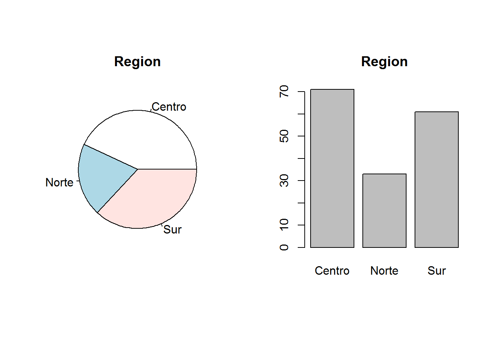
1.6. Realiza un histograma y un diagrama de cajas de la variable Diabeticos. A la vista de estas representaciones gráficas, ¿qué puedes decir acerca de la simetría de esta variable? ¿Qué crees que será mayor, la media o la mediana?
par(mfrow=c(1,2), pty="s")hist(ZBS_2021$Diabeticos, main="Nº de diabéticos", xlab="")boxplot(ZBS_2021$Diabeticos, main="Nº de diabéticos")
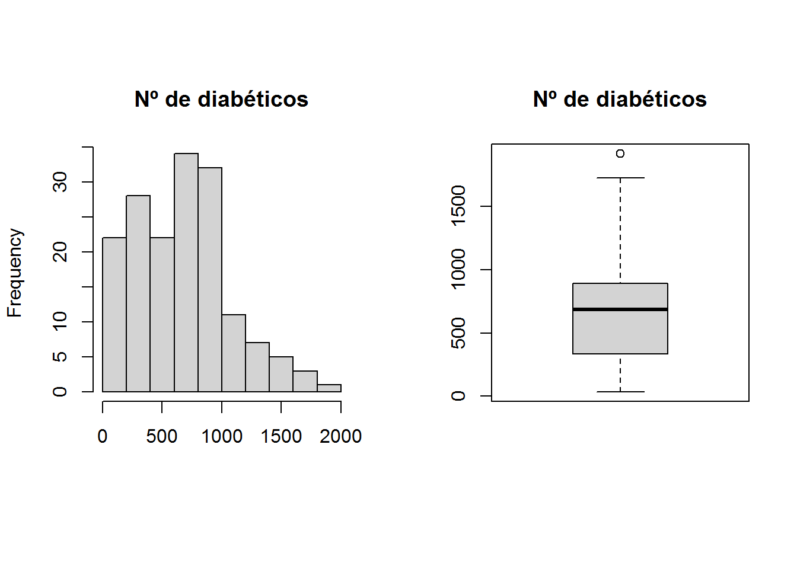
1.7. Calcula el coeficiente de asimetría, la media y la mediana de la variable Diabeticos. ¿Confirman dichos valores lo observado en el histograma y el diagrama de cajas?
eda(ZBS_2021$Diabeticos)
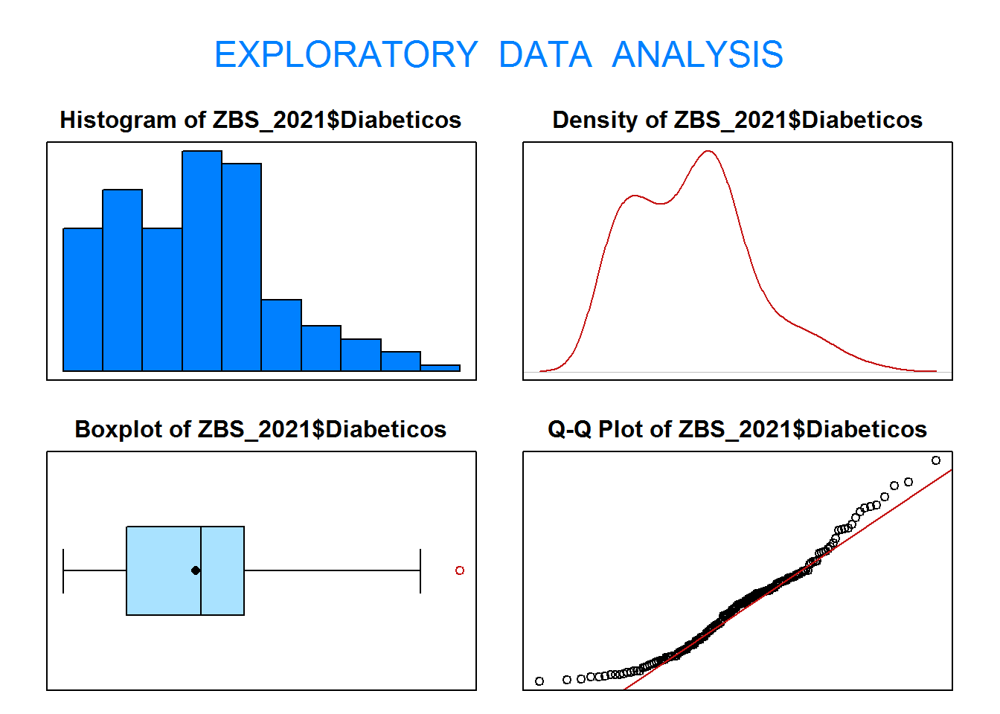
Size (n) Missing Minimum 1st Qu Mean Median TrMean
165.000 0.000 33.000 333.000 664.018 686.000 644.604
3rd Qu Max Stdev Var SE Mean I.Q.R. Range
893.000 1917.000 402.128 161707.055 31.306 560.000 1884.000
Kurtosis Skewness SW p-val
-0.060 0.540 0.000
1.8. Calcula e interpreta el coeficiente de curtosis de la variable Indice.
eda(ZBS_2021$Indice)
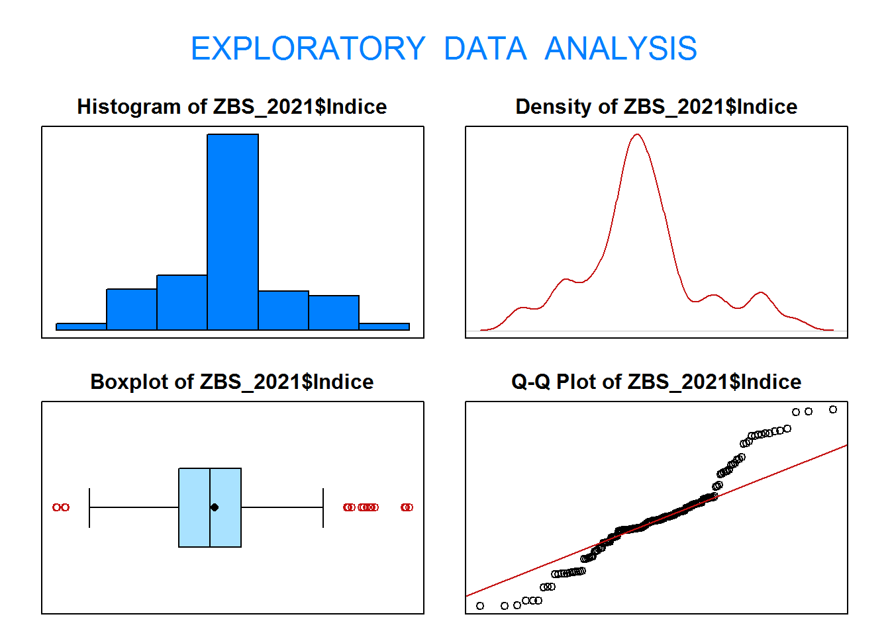
Size (n) Missing Minimum 1st Qu Mean Median TrMean 3rd Qu
165.000 0.000 9.100 28.700 34.396 33.600 34.208 38.600
Max Stdev Var SE Mean I.Q.R. Range Kurtosis Skewness
65.400 11.766 138.431 0.916 9.900 56.300 0.338 0.399
SW p-val
0.000
1.9. Compara la dispersión de las variables Pob14 y Pob90.
$Alta
Min. 1st Qu. Median Mean 3rd Qu. Max.
81.10 82.30 82.70 82.79 83.30 84.70
$Baja
Min. 1st Qu. Median Mean 3rd Qu. Max.
80.80 82.80 83.40 83.41 84.12 85.80
2.3. Realiza un diagrama de cajas de la variable Natalidad por tipo de región geográfica. Compara la asimetria de la variable en los distintos grupos.
boxplot(ZBS_2021$Natalidad ~ ZBS_2021$Region)
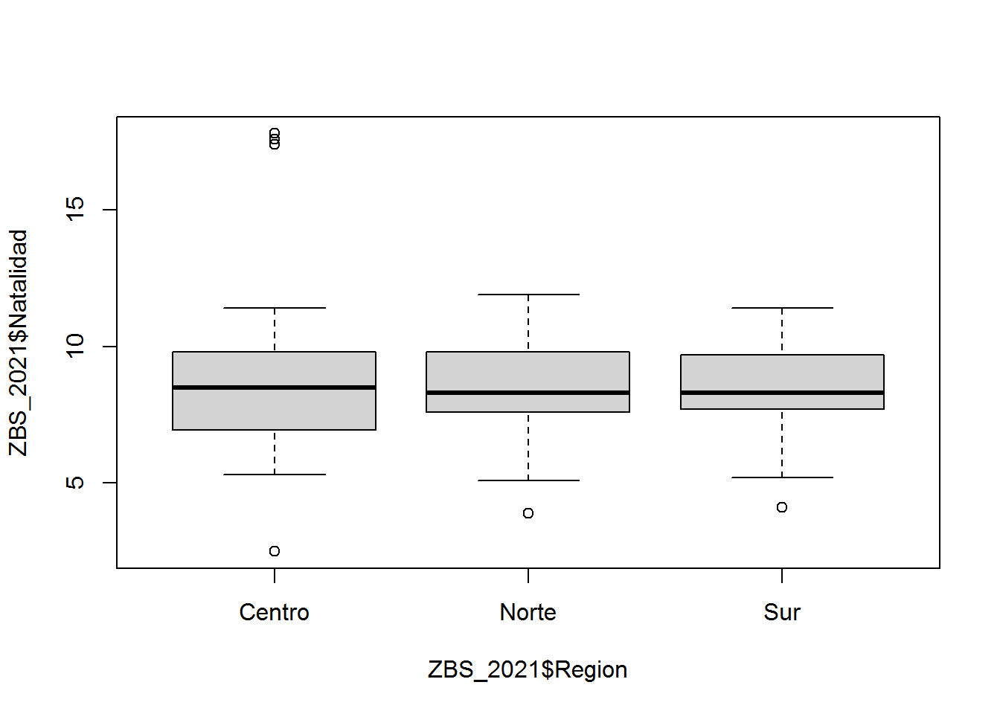
tapply(ZBS_2021$Natalidad, ZBS_2021$Region, eda)
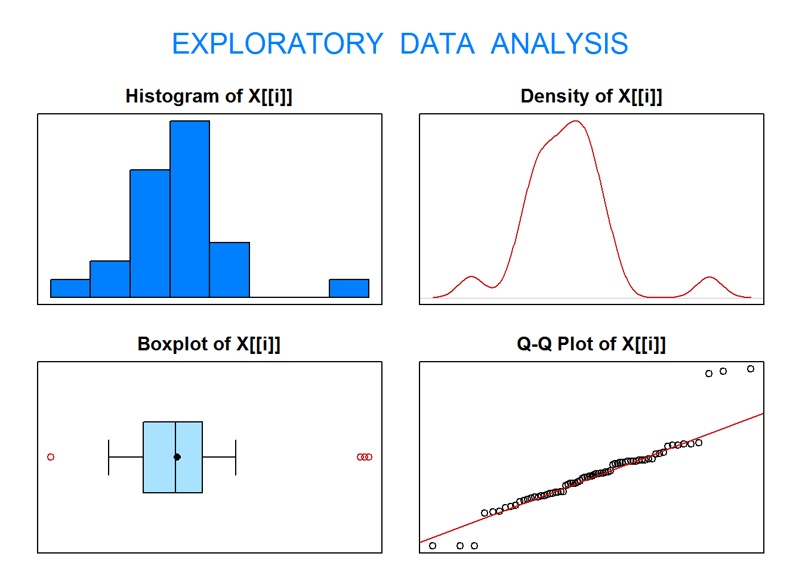
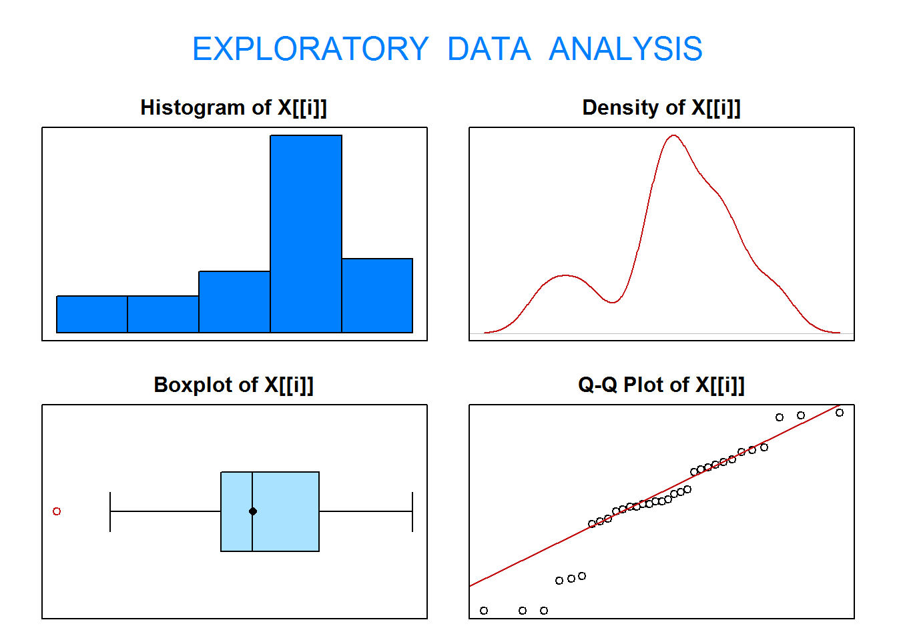
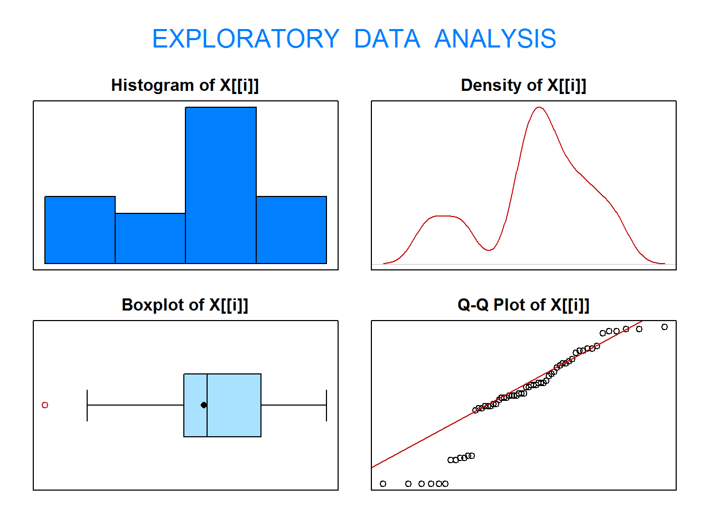
$Centro
Size (n) Missing Minimum 1st Qu Mean Median TrMean 3rd Qu
71.000 0.000 2.500 6.950 8.592 8.500 8.457 9.800
Max Stdev Var SE Mean I.Q.R. Range Kurtosis Skewness
17.800 2.763 7.634 0.328 2.850 15.300 3.028 0.954
SW p-val
0.000
$Norte
Size (n) Missing Minimum 1st Qu Mean Median TrMean 3rd Qu
33.000 0.000 3.900 7.600 8.318 8.300 8.345 9.800
Max Stdev Var SE Mean I.Q.R. Range Kurtosis Skewness
11.900 2.183 4.767 0.380 2.200 8.000 -0.391 -0.522
SW p-val
0.032
$Sur
Size (n) Missing Minimum 1st Qu Mean Median TrMean 3rd Qu
61.000 0.000 4.100 7.700 8.226 8.300 8.282 9.700
Max Stdev Var SE Mean I.Q.R. Range Kurtosis Skewness
11.400 2.068 4.277 0.265 2.000 7.300 -0.452 -0.604
SW p-val
0.000
2.4. Selecciona únicamente las zonas básicas de salud situadas en la región del Sur. Compara la tasa de desempleo media en función del sexo mayoritario de la zona.
2.5. Realiza una tabla de contingencia para las variables Region y Pobreza.
X <-table(ZBS_2021$Region, ZBS_2021$Pobreza)X
Alta Baja
Centro 24 47
Norte 4 29
Sur 37 24
¿Que porcentaje de zonas básicas de salud se encuentran en la región del norte y tienen riesgo alto de pobreza?
prop.table(X)
Alta Baja
Centro 0.14545455 0.28484848
Norte 0.02424242 0.17575758
Sur 0.22424242 0.14545455
Entre las zonas básicas de salud del centro, ¿que porcentaje tienen riesgo bajo de pobreza?
prop.table(X,1)
Alta Baja
Centro 0.3380282 0.6619718
Norte 0.1212121 0.8787879
Sur 0.6065574 0.3934426
Entre las zonas básicas de con riesgo alto de pobreza, ¿que porcentaje pertecen al sur?
prop.table(X,2)
Alta Baja
Centro 0.36923077 0.47000000
Norte 0.06153846 0.29000000
Sur 0.56923077 0.24000000
2.6. Realiza un diagrama de dispersión de las variables Pob y Extranjeros. Calcula e interpreta el coeficiente de correlación lineal entre ambas variables. ¿Crées que sería adecuado utilizar otro tipo de relación no lineal para medir la asociación entre estas variables?
2.7. ¿Existe una relación lineal entre la tasa de natalidad y el índice de envejecimiento de las zonas básicas de salud? Realiza el análisis estadístico adecuado e interpreta los resultados obtenidos.
3.1. Contrasta al nivel de significación de \(\alpha=0.05\) si la esperanza de vida media en las zonas básicas de salud de Navarra es superior 83 años. Justifica si puedes asumir normalidad. ¿Qué contraste es más adecuado en este caso?
## X="Esperanza de vida en las ZBS de Navarra"## H0: mu=83## H1: mu>83eda(ZBS_2021$Esperanza)
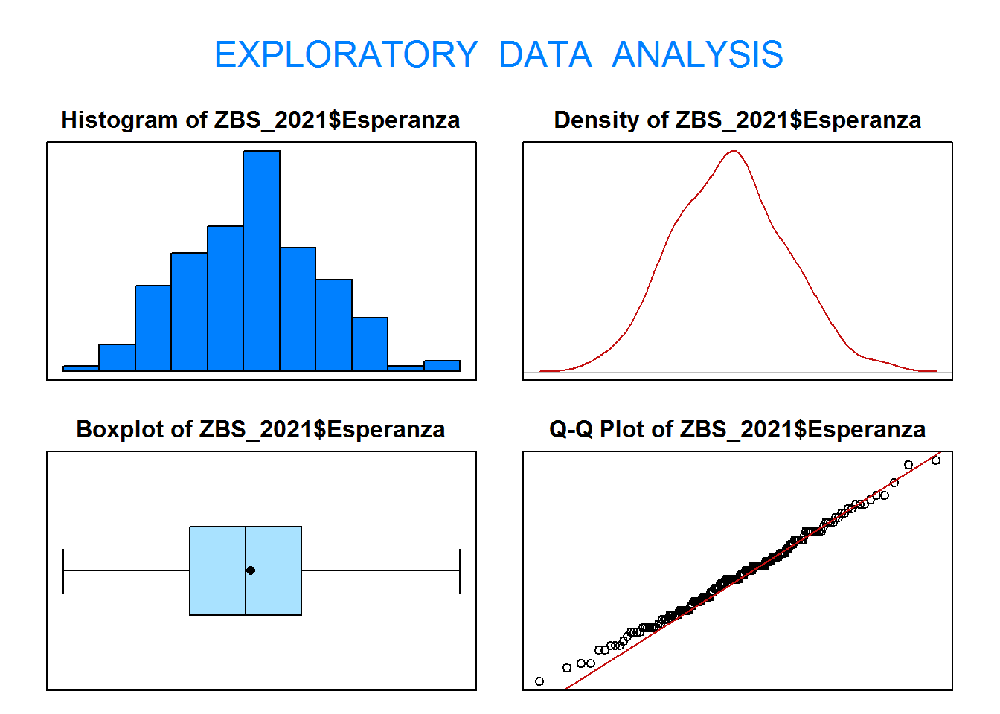
Size (n) Missing Minimum 1st Qu Mean Median TrMean 3rd Qu
165.000 0.000 80.800 82.400 83.165 83.100 83.157 83.800
Max Stdev Var SE Mean I.Q.R. Range Kurtosis Skewness
85.800 0.950 0.902 0.074 1.400 5.000 -0.217 0.147
SW p-val
0.806
One Sample t-test
data: ZBS_2021$Esperanza
t = 2.2291, df = 164, p-value = 0.01358
alternative hypothesis: true mean is greater than 83
95 percent confidence interval:
83.04251 Inf
sample estimates:
mean of x
83.16485
3.2. Contrasta al nivel de significación de \(\alpha=0.01\) si la tasa de desempleo media de las zonas básicas de salud situadas en el norte de Navarra es inferior al 8%. Justifica si puedes asumir normalidad. ¿Qué contraste es más adecuado en este caso?
## X="Número de peatones fallecidos en el Sudeste Asiático"## H0: mu=15## H1: mu>15pos <-which(ZBS_2021$Region=="Norte")ZBS.Norte <- ZBS_2021[pos, ]eda(ZBS.Norte$Tasa_paro)
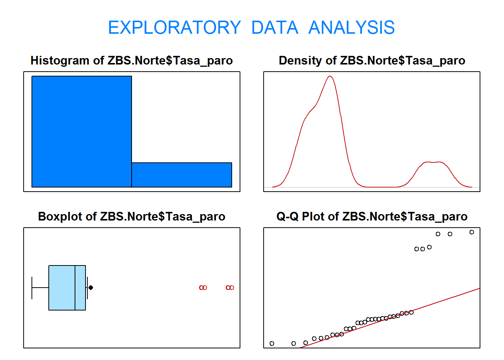
Size (n) Missing Minimum 1st Qu Mean Median TrMean 3rd Qu
33.000 0.000 5.150 5.950 7.953 7.200 7.828 7.710
Max Stdev Var SE Mean I.Q.R. Range Kurtosis Skewness
14.650 2.966 8.796 0.516 1.760 9.500 0.283 1.348
SW p-val
0.000
Warning in wilcox.test.default(ZBS.Norte$Tasa_paro, mu = 8, alternative =
"less", : cannot compute exact p-value with ties
Wilcoxon signed rank test with continuity correction
data: ZBS.Norte$Tasa_paro
V = 183, p-value = 0.04153
alternative hypothesis: true location is less than 8
3.3. Contrasta al nivel de significación de \(\alpha=0.05\) si existen diferencias significativas en la esperanza de vida media entre las zonas básicas de salud situadas en el norte y en el sur de Navarra. Realiza el contraste de hipótesis que consideres adecuado.
## X="Esperanza de vida de las ZBS del norte de Navarra"## Y="Esperanza de vida de las ZBS del sur de Navarra"## H0: muX - muY = 0## H1: muX - muY != 0pos <-which(ZBS_2021$Region=="Norte")ZBS.Norte <- ZBS_2021[pos, ]pos <-which(ZBS_2021$Region=="Sur")ZBS.Sur <- ZBS_2021[pos, ]eda(ZBS.Norte$Esperanza)
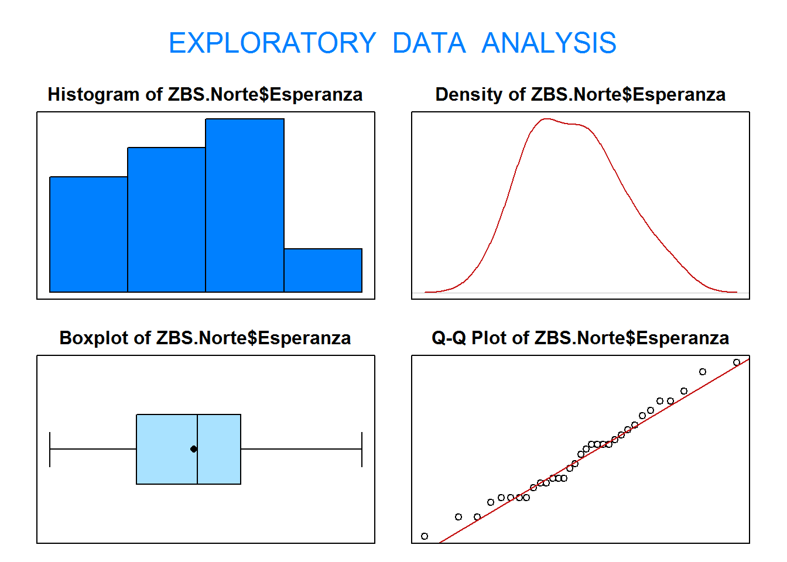
Size (n) Missing Minimum 1st Qu Mean Median TrMean 3rd Qu
33.000 0.000 81.200 82.200 82.861 82.900 82.852 83.400
Max Stdev Var SE Mean I.Q.R. Range Kurtosis Skewness
84.800 0.895 0.801 0.156 1.200 3.600 -0.748 0.294
SW p-val
0.652
eda(ZBS.Sur$Esperanza)
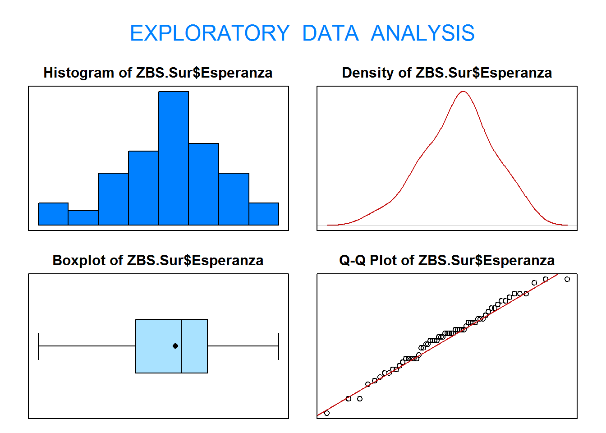
Size (n) Missing Minimum 1st Qu Mean Median TrMean 3rd Qu
61.000 0.000 81.100 82.600 83.213 83.300 83.229 83.700
Max Stdev Var SE Mean I.Q.R. Range Kurtosis Skewness
84.800 0.829 0.686 0.106 1.100 3.700 -0.299 -0.244
SW p-val
0.645
Welch Two Sample t-test
data: ZBS.Norte$Esperanza and ZBS.Sur$Esperanza
t = -1.87, df = 61.494, p-value = 0.06624
alternative hypothesis: true difference in means is not equal to 0
95 percent confidence interval:
-0.7293811 0.0243637
sample estimates:
mean of x mean of y
82.86061 83.21311
3.4. Contrasta al nivel de significación de \(\alpha=0.05\) si el índice de envejecimiento medio entre las zonas básicas de salud con sexo mayoritario de hombres es al menos 2 puntos superior al índice de envejecimiento de las zonas básicas de salud con sexo mayoritario de mujeres. Realiza el contraste de hipótesis que consideres adecuado.
## X="Índice de envejecimiento de las ZBS con sexo mayoritario de hombres"## Y="Índice de envejecimiento de las ZBS con sexo mayoritario de mujeres"## H0: muX - muY = 0## H1: muX - muY != 0pos <-which(ZBS_2021$Sexo=="Hombres")ZBS.Hombres <- ZBS_2021[pos, ]pos <-which(ZBS_2021$Sexo=="Mujeres")ZBS.Mujeres <- ZBS_2021[pos, ]eda(ZBS.Hombres$Indice)
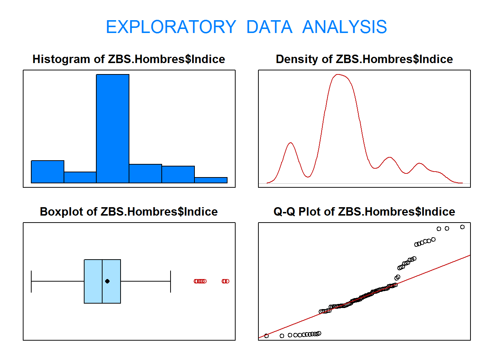
Size (n) Missing Minimum 1st Qu Mean Median TrMean 3rd Qu
98.000 0.000 18.100 30.900 36.491 35.200 36.096 39.675
Max Stdev Var SE Mean I.Q.R. Range Kurtosis Skewness
65.400 11.123 123.726 1.124 8.775 47.300 0.355 0.617
SW p-val
0.000
eda(ZBS.Mujeres$Indice)
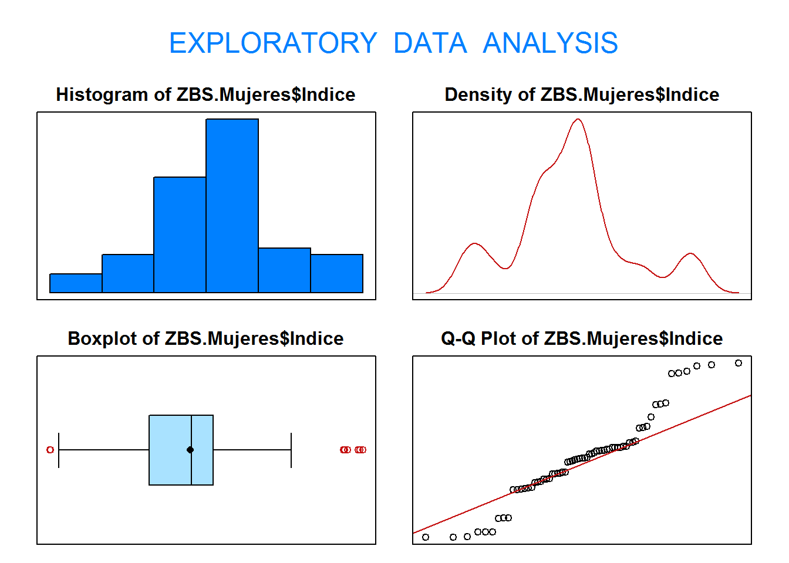
Size (n) Missing Minimum 1st Qu Mean Median TrMean 3rd Qu
67.000 0.000 9.100 24.800 31.331 31.500 31.103 34.900
Max Stdev Var SE Mean I.Q.R. Range Kurtosis Skewness
58.600 12.087 146.091 1.477 10.100 49.500 0.097 0.324
SW p-val
0.004
Wilcoxon rank sum test with continuity correction
data: ZBS.Hombres$Indice and ZBS.Mujeres$Indice
W = 3865, p-value = 0.02683
alternative hypothesis: true location shift is greater than 2
3.5. Contrasta al nivel de significación de \(\alpha=0.05\) si existen diferencias entre los niveles medios del índice de envejecimiento según la región geográfica de las zonas básicas de salud de Navarra. Si has detectado diferencias, averigua entre qué grupos existen diferencias estadísticamente significativas.
Study: ZBS_2021$Indice ~ ZBS_2021$Region
Kruskal-Wallis test's
Ties or no Ties
Critical Value: 27.88671
Degrees of freedom: 2
Pvalue Chisq : 8.799885e-07
ZBS_2021$Region, means of the ranks
ZBS_2021.Indice r
Centro 60.73239 71
Norte 105.84848 33
Sur 96.55738 61
Post Hoc Analysis
Comparison between treatments mean of the ranks.
Difference pvalue Signif. LCL UCL
Centro - Norte -45.116090 0.0000 *** -63.334508 -26.89767
Centro - Sur -35.824983 0.0000 *** -50.921369 -20.72860
Norte - Sur 9.291108 0.3276 -9.395142 27.97736